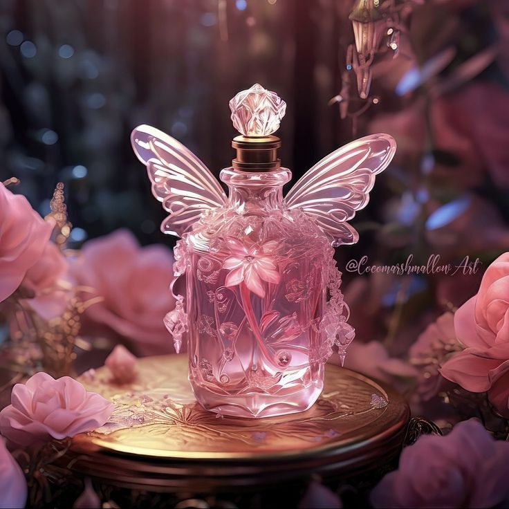
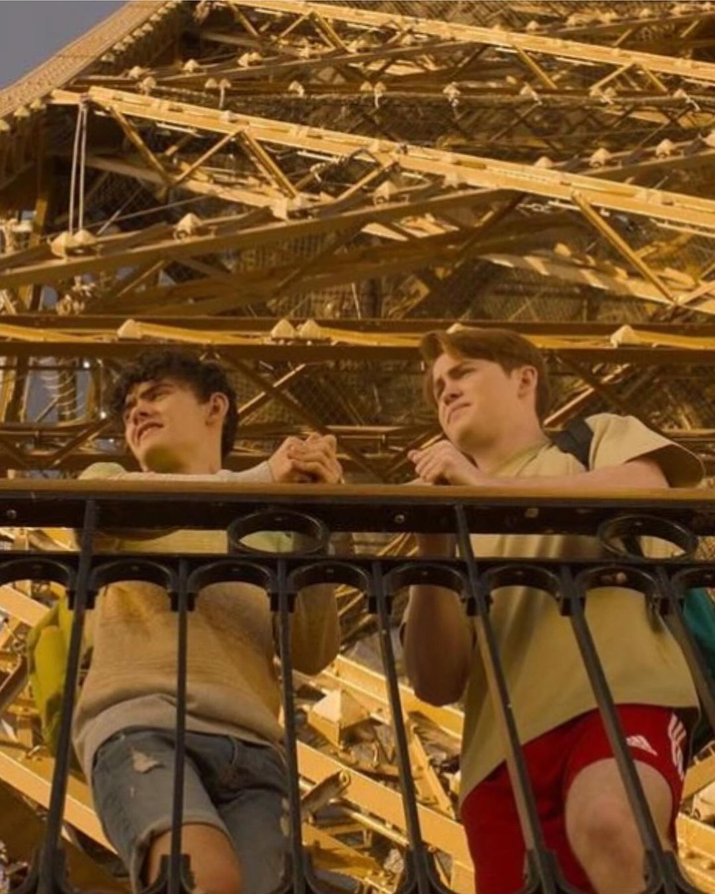
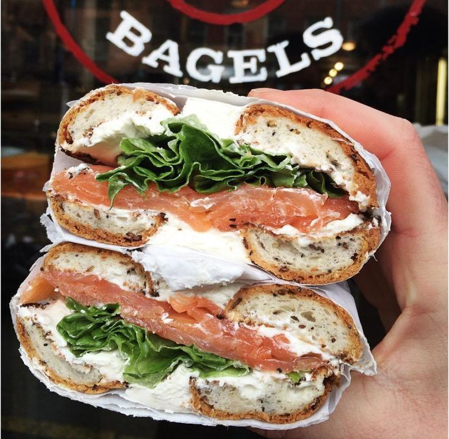
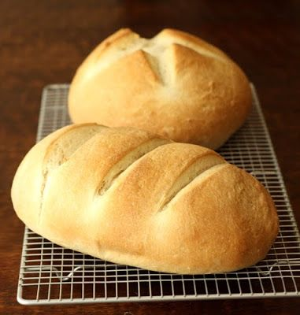
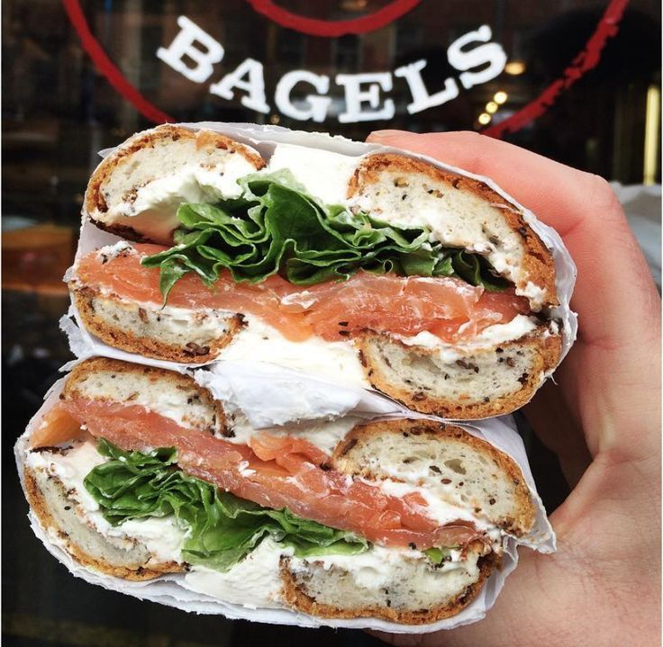
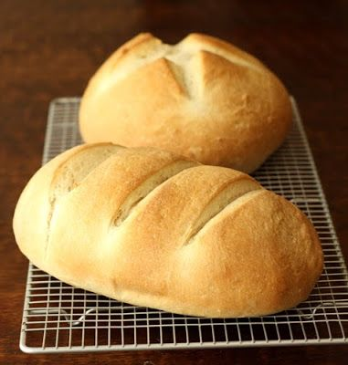

My mornings in France unfolded with a symphony of
delectable aromas at a charming bakery.The flaky
perfection of croissants and the warm embrace of
a freshly baked baguette became daily rituals.
Each bite wasa journey into the heart of French
culinary craftsmanship, a delightful start to days
filled with exploration and indulgence.
Venturing to Grasse, the perfume capital, heightened my senses in an olfactory
adventure.Surrounded by fields of fragrant flowers, I immersed myself in the art
of perfumery. Historic perfume houses unveiled the secrets of scent creation, and
in a hands-on workshop, I crafted a bespoke fragrance—a personal essence that
would forever encapsulate the spirit of this fragrant escapade.


As the sun dipped below the Parisian skyline, the Eiffel Tower emerged
as an iconic silhouette, adorned in a cascade of evening lights. Ascending
its wrought-iron lattice, the panoramic view of the City of Lights below was
nothing short of magical. This architectural marvel became a symbol of romance,
a testament to Paris's timeless allure.Also at the season 2 of Heartstopper series,
they shoot a scene at Eiffel Tower!
Culminating my French sojourn, the Palais Garnier unfolded its grandeur before me.
The stage was set for an evening of ballet, where graceful dancers wove tales
of elegance and passion.The opulent surroundings and the emotive movements of
the performers created an enchanting finale, leaving me with a profound appreciation
for the rich cultural tapestry that is uniquely French.
Enjoy the Ballet Dance Video -->
 


